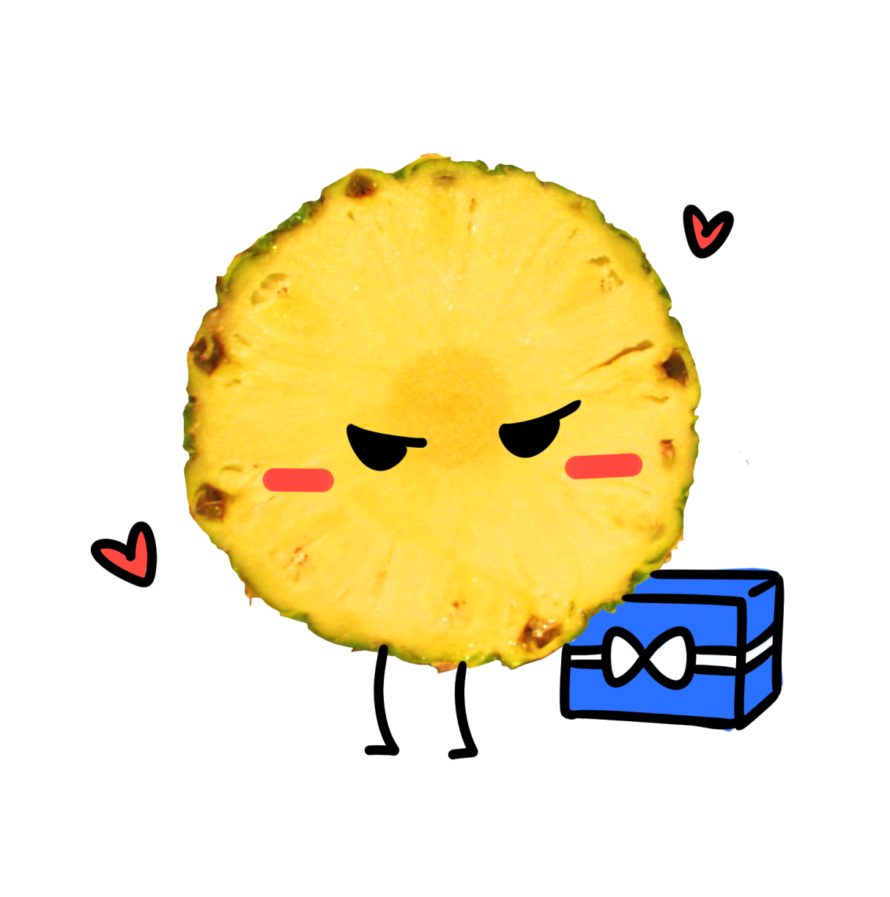
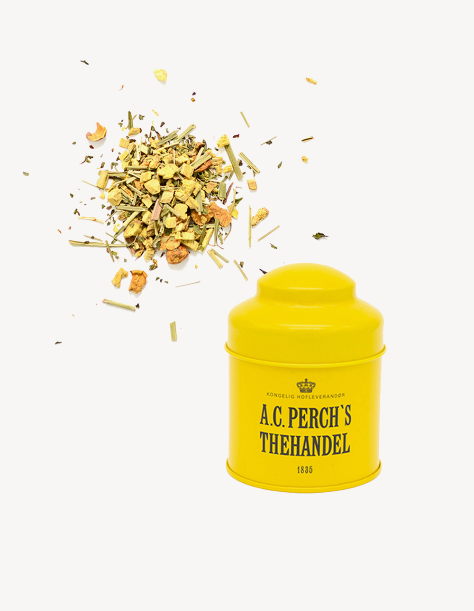

겉바속촉 파인애플
오다 주웠다!
츤데레지만 마음은 그 누구보다 따뜻한 당신!
무심하게 보여도 꽤나 섬세한 경우가 많아요.
호기심이 많으면서 집중력이 높고,
야망이 넘치면서도 차분하죠.
앞뒤가 다르고 겉과 속이 달라 의외의 모습을 많이 볼 수 있어요..
당신과 닮은 차를 추천해드릴게요.
추천 차
Edition Denmark - Cool Herbal
(teabags, caffeine)
덴마크의 국민 허브티라고 불리우는 쿨허벌.
상쾌한 페퍼민트와 레몬그라스의 뒤를 잇는 감초의
자연스러운 단맛이 매력적이예요.
꿀허벌이라고도 불리울 정도로 달콤한 맛과 대비되는 산뜻한 민트와
은은한 레몬향이 의외의 모습을 가진
당신과 비슷하죠? 시원한 음료처럼 마실 수 있도록
당신에게 이 차를 추천할게요!